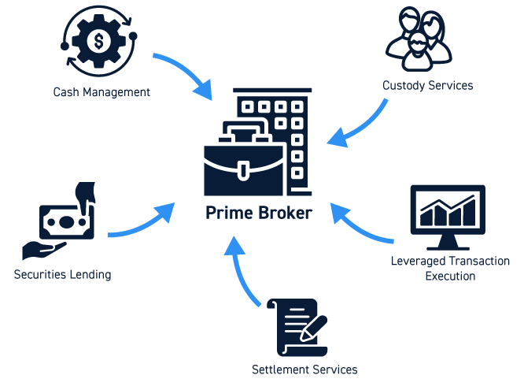

Introduction / 简介
Equities Prime Brokerage (PB) acts as a one-stop “super butler” and “arsenal” for hedge funds and large institutional investors. While the fund’s core competency is its trading strategy, the PB’s core competency is solving all logistical and funding problems outside of that strategy.
股票主经纪商业务 (Prime Brokerage) 是为对冲基金和大型机构投资者提供的一站式“超级管家”和“军火库”。如果说基金的核心能力是交易策略，那么 PB 的核心能力就是解决除策略以外的所有后勤和资金问题。
Core Business Model Summary / 核心业务模式汇总

The following table breaks down the Prime Brokerage business by its operational pillars, core products, the specific problems they solve for clients, and their key advantages.
下表按业务支柱、核心产品、解决的具体痛点以及主要优势，对主经纪商业务进行了详细拆解。
| Business Area 业务领域 |
Core Product & Key Mechanics 核心产品与核心机制 |
Problem Solved 解决的痛点 |
Advantages 优势 |
|---|---|---|---|
| Physical Prime (Financing) 实物主经纪商 (融资) |
Cash Margin Financing 现金保证金融资 Key Mechanics (核心机制): Clients pay Margin Interest (e.g., SOFR + Spread). The bank manages risk by setting Margin Requirements. 客户支付融资利息（如 SOFR + 利差）。银行通过设定维持保证金比例来管理风险。 |
Capital Constraint: Clients want to amplify returns (leverage) but are limited by their own capital base. 资金痛点： 客户希望放大收益（上杠杆），但受限于自有资金规模。 |
• Maximize Efficiency: Maximizes capital efficiency via leverage. • Larger Exposure: Allows clients to hold larger long positions than cash would permit. • 效率最大化： 通过杠杆最大化资金使用效率。 • 扩大敞口： 允许客户持有比现金所能支持的更大的头寸。 |
| Physical Prime (Securities Lending) 实物主经纪商 (证券借贷) |
SBL & Repo (Securities Borrowing & Lending) 证券借贷与回购协议 Key Mechanics (核心机制): Clients pay a Borrow Fee. For “Hard-to-Borrow” stocks, this fee can be very high. Often structured as a Reverse Repo. 客户支付借券费。对于“难借”的股票，费用极高。通常通过逆回购 (Reverse Repo) 的形式构建。 |
Short Selling Restriction: Clients want to short a stock (bet on price drop) but cannot sell what they do not own. 做空痛点： 客户看跌某股票想做空，但不能卖出自己手里没有的东西。 |
• Enable Shorting: Enables Long/Short strategies. • Liquidity: Provides liquidity for “hard-to-borrow” assets. • Yield: Generates extra yield for asset lenders. • 实现做空： 支持多空策略的执行。 • 提供流动性： 为“难借”资产提供流动性。 • 产生收益： 为借出资产的一方创造额外收益。 |
| Physical Prime (Operations) 实物主经纪商 (运营) |
Clearing, Settlement & Custody 清算、结算与托管 Key Mechanics (核心机制): Centralized Clearing. The PB consolidates trades from various executing brokers into one account. 集中清算。 主经纪商将来自不同执行券商的所有交易汇总到一个账户中。 |
Operational Complexity: Managing thousands of trades across multiple exchanges is costly and prone to settlement errors. 运营痛点： 管理跨多个交易所的数千笔交易成本极高，且容易出现结算错误。 |
• Centralization: Centralizes asset safekeeping. • Efficiency: Reduces back-office administrative burden. • Risk Mitigation: Mitigates counterparty and settlement risks. • 集中管理： 集中保管资产，确保安全。 • 提升效率： 减轻后台行政负担。 • 降低风险： 缓解对手方风险和结算风险。 |
| Synthetic Prime (Delta One) 合成主经纪商 (Delta One) |
Equity Swaps / Total Return Swaps (TRS) 股票互换 / 总回报互换 Key Mechanics (核心机制): The client receives the “Total Return” (Capital Gains + Dividends) and pays a “Financing Rate” to the bank. 客户收取“总回报”（资本增值+股息），并向银行支付“融资利率”。 |
Market Access & Efficiency: Direct ownership is difficult (e.g., restricted markets), tax-inefficient, or capital-intensive. 准入与效率痛点： 直接持有实物股票可能面临市场准入限制、税务低效或资金占用过高的问题。 |
• Market Access: Access restricted markets (e.g., China A-shares, emerging markets). • High Leverage: Often requires lower margin than physical financing. • Operational Ease: Avoids stamp duties and custody complexities. • 市场准入： 轻松进入受限市场（如中国A股、新兴市场）。 • 高杠杆： 通常比实物融资这就需要更低的保证金。 • 运营便捷： 规避印花税和复杂的托管流程。 |
Key Roles & Skills in Prime Brokerage / 核心岗位与技能
The Prime Brokerage ecosystem relies on a diverse set of professionals, from client-facing sales to technical builders. Below are the key roles and the critical skills required to succeed in each.
主经纪商业务生态依赖于多种专业人才的协同工作，从面向客户的销售到技术构建者。以下是核心岗位及其所需的关键技能。
1. Front Office Roles (前台岗位)
- Prime Brokerage Sales / Relationship Management (RM)
- Focus: Client acquisition, negotiation, and concierge service.
- Skills: Negotiation, deep understanding of the hedge fund landscape, cross-selling capabilities (IPOs, Research).
- 销售/客户关系管理: 专注于客户获取、谈判及“管家式”服务。所需技能包括谈判能力、对对冲基金行业的深刻理解及交叉销售能力。
- Securities Lending Trader (Stock Loan)
- Focus: Sourcing liquidity for hard-to-borrow stocks and managing inventory.
- Skills: Repo/SBL market mechanics, understanding borrow costs/rates, inventory management.
- 证券借贷交易员: 专注于为“难借”股票寻找流动性并管理库存。所需技能包括理解回购/借贷市场机制、借贷成本及库存管理。
- Delta One / Synthetic Trader
- Focus: Managing the risk of the Equity Swaps book (hedging Delta/Gamma).
- Skills: Equity Swaps pricing, hedging strategies, understanding funding spreads (SOFR/Libor), and market microstructure.
- Delta One / 合成交易员: 专注于管理股票互换账簿的风险。所需技能包括互换定价、对冲策略及对资金利差和市场微观结构的理解。
- Structuring / Strategist :
- Focus: Designing financing solutions and building automated pricing/risk infrastructure.
- Skills: Python/SQL/KDB+ (automation), Financial Engineering (Greeks, RWA optimization), and translating client needs into technical solutions.
- 结构化 / 策略师 : 专注于设计融资方案及搭建自动定价/风控基础设施。所需技能包括 Python/SQL/KDB+（自动化）、金融工程（Greeks, RWA优化）及将客户需求转化为技术方案的能力。
2. Control & Support Roles (控制与支持岗位)
- Prime Risk Management
- Focus: Monitoring leverage and portfolio concentration to prevent client defaults.
- Skills: Quantitative risk modeling (VaR, Stress Testing), credit risk assessment.
- 主经纪商风控: 监控杠杆和持仓集中度以防止违约。需要量化风险建模（VaR, 压力测试）及信用风险评估技能。
- Operations / Client Service
- Focus: Trade settlement, asset custody, and corporate actions processing.
- Skills: Trade lifecycle management (DTCC/Euroclear), operational process optimization.
- 运营 / 客服: 专注于交易结算、资产托管及公司行动处理。需要熟悉交易生命周期管理及流程优化。
- Technology / Data Engineering
- Focus: Building low-latency trading platforms and data lakes.
- Skills: Software engineering (C++, Java), Cloud infrastructure (AWS), large-scale database management.
- 技术 / 数据工程: 专注于构建低延迟交易平台及数据湖。需要软件工程及云基础设施技能。
Conclusion / 总结
Prime Brokerage is the infrastructure that powers the hedge fund industry.
- Physical Prime solves the fundamental needs of borrowing money (Margin) and borrowing shares (Stock Loan).
- Synthetic Prime solves the advanced needs of capital efficiency and global access through derivatives.
For a Structuring Analyst, the opportunity lies in automating these high-volume workflows (e.g., automated swap pricing, real-time risk monitoring) to improve the desk’s scalability and response time.
主经纪商业务是驱动对冲基金行业的“基础设施”。
- 实物业务 (Physical) 解决了“借钱” (融资) 和“借票” (借券) 的基本需求。
- 合成业务 (Synthetic) 通过衍生品解决了资金效率和全球市场准入的高级需求。